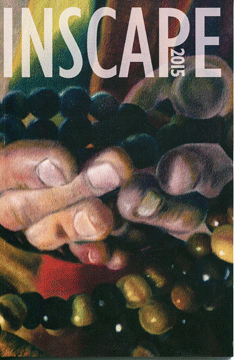
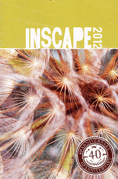
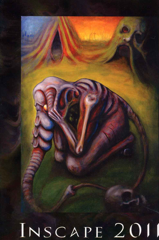
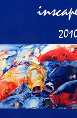

The following past issues of Inscape literary magazine are still available for purchase in the Washburn University Book Store. There are many other issues not currently shown that date back to Inscape's first issue back in 1972
Inscape 2015
Volume XXXVI. Inscape is compiled annually at Washburn University. It premiered in 1972 and features poetry, short fiction, creative non-fiction and visual art.
Inscape 2014
Volume XXXV. Inscape is the literary journal compiled annually at Washburn University Department of English. Inscape features poetry, short fiction, creative non-fiction, and visual art from the region and beyond.

Inscape 2012
Volume XXXVII. 40th Anniversary Edition. Inscape is the literary journal compiled annually at Washburn University Department of English. Inscape features poetry, short fiction, creative non-fiction, and visual art from the region and beyond.
Inscape 2011
Volume XXXVI. Inscape is compiled annually at Washburn University. It premiered in 1972 and features poetry, short fiction, creative non-fiction and visual art.
Inscape 2010
Volume XXXV. Inscape is the literary journal compiled annually at Washburn University Department of English. Inscape features poetry, short fiction, creative non-fiction, and visual art from the region and beyond.
Inscape 2009
Volume XXXIV. Inscape which premiered in 1972, is the literary journal compiled annually at Washburn University Department of English. Inscape features poetry, short fiction, creative non-fiction, and visual art from the region and beyond.